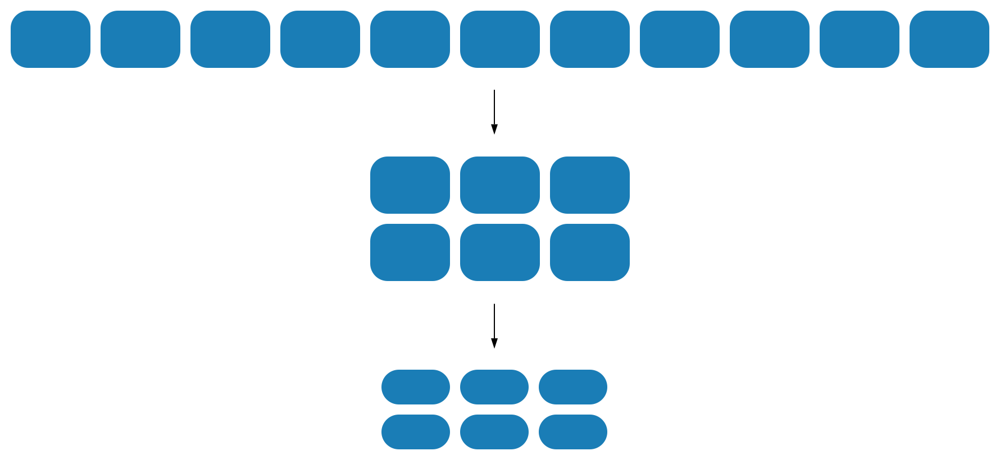
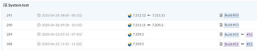
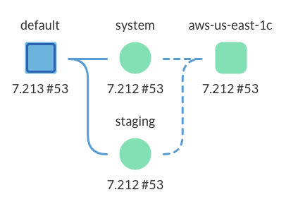

Vespa Cloud: Let the world's expert on Big Data Serving take care of the serving.
The best ML teams do not train models, but build a system with signals to model training, model training automation, and automated model deployment. This keeps the model current, and routine tasks are automated - all work can go into improving the model.
Vespa Cloud’s role is being a component in this cycle, see model serving. Emit data for next model training cycle using grid logging and feature export. Then accept a new model version using Safe Launches by just deploying a new model URL. Repeat..
The best teams are global leaders in their business, or working to be. They drive Vespa to implement new features, so teams can innovate together. Vespa Cloud lets teams access features as they are built. Lead time from feature request to ready-to-use is at best days - but can be years, for game-changing features like tensors and approximate nearest-neighbor.
Organizations use Vespa to get a competitive advantage, and Vespa.ai enables that. They use Vespa Cloud to let teams use their expertise best, and work closely with Vespa Experts to use the right features the right ways..
Using Vespa Cloud enables the Vespa Team to assist you to optimise the application to reduce resource spend. Based on 150 applications running on Vespa Cloud today, savings are typically 50%. Cost optimization is hard to do without domain knowledge - but few teams are experts in both their application and its serving platform. Sizing means finding both the right node size and the right cluster topology:

Applications use Vespa for their primary business use cases. Availability and performance vs. cost are business decisions. The best sized application can handle all expected load situations, and is configured to degrade quality gracefully for the unexpected. Read more in Performance Lab and Overload handling.
Even though Vespa is cost efficient out of the box, Vespa Experts can usually spot over/under-allocations in CPU, memory and disk space/IO, and discuss trade offs with the application team.
Using Safe Launches, applications go live with little risk, then right-size the application based on true load after using Vespa’s elasticity features with automated data migration.
Vespa is built to be always-on, also while upgrading. Vespa Cloud upgrades multiple times a week, see below for Security and Leading Edge.
Upgrading means taking nodes offline for new software install. Vespa Cloud cloud orchestrates the process, taking nodes offline safely one by one, and data is synced before upgrading the next node. This keeps all data available at all time, with no extra cluster setup.

As all Vespa Cloud applications must be sized to tolerate single node failures, the upgrader stops upgrading during failures, and resumes once new nodes are in place, and data is synced.
In contrast, manually upgrading cluster takes time, and are often hence put off to later. Often a separate application is spun up, data is migrated, manual tests are run, etc. This has high costs in both HW/cloud resources and people time.
Transparent and easy-to-understand pricing model, based on node resources only. No extra modules needed to unlock Vespa features, as these are native to Vespa and cannot be disabled (this also enables high performance and operational simplicity)
<nodes count="16">
<resources vcpu="8" memory="32Gb" disk="100Gb"/>
</nodes>
Use resource scaling for seasonal peaks - just change resource allocations, and auto data redistribution enables extra capacity. No need to pay for the light-blue resources when not needed:
Using the Auto in-place Upgrader (above), Vespa code and dependencies are upgraded multiple times a week. As new Operating System versions are available (normally once a month), Vespa base hosts are booted with the new release, using the Auto in-place Upgrader. This keeps the clusters safe - all software on the node is up to date
External and internal interfaces are encrypted using mTLS. Data at rest is encrypted.
Vespa applications range from applications with 100k documents and 100k query load, to 20B documents and 1k query load - and everything in between. Update rates range from 0 to 10k/sec.
The applications hence have different latency and throughput requirements, and Vespa has more indexing and topology options to optimize for the different use cases. Adding to this, Vespa’s search threads configuration helps balance latency vs. CPU usage. Use attribute memory options to balance read/write latencies vs. memory usage.
A correctly sized application handles all planned-for scenarios. Planning can however be wrong (nobody is perfect!), and extraordinary events happen. That is exactly when the application should not fail.
Depending on the event, the right action might be to add or change resources, and takes Vespa domain knowledge to evaluate.
Vespa Cloud helps configure a tradeoff between recall and resource usage, called Soft Degradation. This lets the application owner decide in advance how to simplify the query matching so results are returned, but not necessarily the best ones. Having almost as good results is better than going black. This is easiest done using Vespa Cloud and detailed performance inspection during regular load.
The best launches are non-events. As any launch has a set of unknowns, it makes sense to pad node usage, then quickly scale back when in steady state - see Cluster Sizing. This eliminates the need for lengthy and costly pre-launch performance test cycles for both node instance type and number of nodes used.

Launches are changes to capacity, configuration and/or code. To safeguard any change, Vespa Cloud has Automated Deployments. Automated Deployments are System, Staging and Production tests run at any deployment. This lets developers define quality metrics and test for these a-priori. The best teams build a strong test suite and are hence confident in all changes. These teams deploy changes to production more times a day, and are orders or magnitude more productive than without automated deployment.
Vespa Cloud has built-in support to block potentially destructive configuration changes, see safe schema modifications.
Bugs happen, and quick failure resolution is essential. See Developer Lab for how developers copy the exact production config into a sandbox for debugging and development.
Using Vespa Cloud enables Vespa Support to quickly assess production serving problems - the application dashboard is already available to them, with the relevant metrics. In many cases, Vespa Support can in advance predict future problems based on trends.
Nodes and data centers can and will fail. Vespa Cloud detects and replaces and failed nodes automatically, and migrates data for replica re-generation.
Catastrophic event handling with multiple availability zones and Auto failover is supported for the data center / network events.
The General Data Protection Regulation (GDPR) and California Consumer Privacy Act (CCPA) are relevant for applications with personal data. Highlights:
Using the Vespa Cloud Sandbox and sample applications enables developers to get started in 15 minutes. The first strawman application with test data is normally built in a day. The fastest teams launch to a production environment the first week. This in order to integrate with production data feeders and query sources early, for rapid iteration.
Developers can deploy Sandbox applications to a Docker instance on their laptop, too - that makes it easy to be productive in all environments.